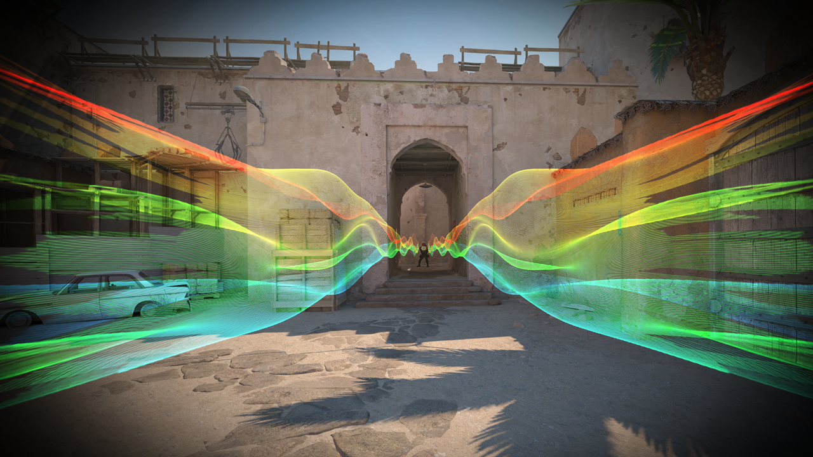
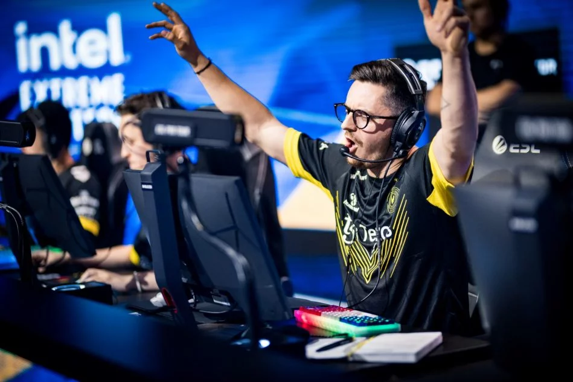
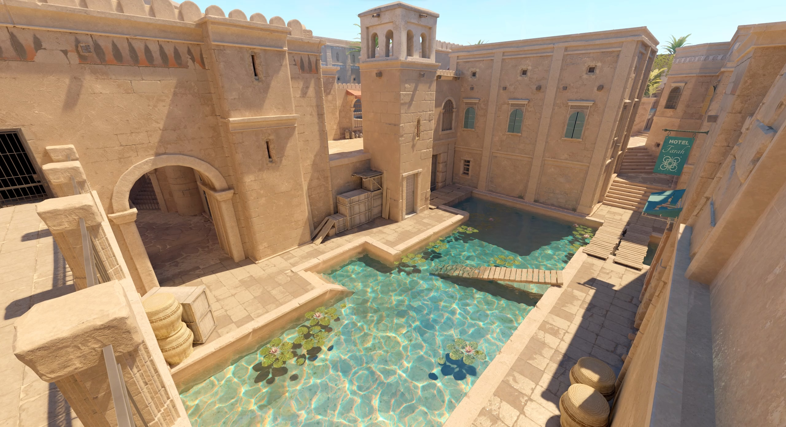

Un héritage lourd à porter
Counter-Strike 2 arrive avec la tâche difficile de succéder à CS:GO, véritable pilier de l’e-sport. Les attentes étaient énormes : un moteur graphique modernisé, une meilleure fluidité, et surtout, préserver l’ADN compétitif qui a fait la réputation de la licence depuis plus de vingt ans.
Un moteur Source 2 qui fait la différence
Le passage au moteur Source 2 apporte une vraie fraîcheur visuelle et sonore : textures plus détaillées, éclairages dynamiques, fumigènes interactifs et effets audio immersifs qui changent réellement le gameplay. Cependant, certains joueurs ont remarqué un manque d’optimisation et des chutes de performance sur des configurations moyennes.

La même recette, avec quelques épices
CS2 reste fidèle à son gameplay précis et exigeant : un tir millimétré, des déplacements maîtrisés et une économie stratégique. Les nouveautés sont discrètes mais efficaces, comme les grenades fumigènes plus réalistes ou le tick rate amélioré, qui renforcent l’équité en compétition.
Une scène e-sport en transition
La communauté compétitive s’adapte progressivement à CS2. Les grandes équipes migrent, mais certaines critiques persistent, notamment sur l’équilibrage et le manque de contenu au lancement. Malgré cela, l’avenir s’annonce prometteur avec un suivi régulier de Valve.

Un nouveau départ imparfait, mais solide
CS2 n’est pas une révolution, mais une modernisation nécessaire. Avec son moteur plus moderne, son gameplay peaufiné et sa base compétitive, il s’impose comme le futur de la franchise. Les ajustements à venir détermineront s’il deviendra aussi incontournable que son prédécesseur.
